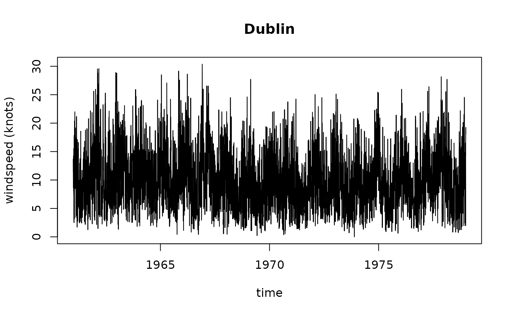

Ireland wind data, 1961-1978
wind.RdDaily average wind speeds for 1961-1978 at 12 synoptic meteorological stations in the Republic of Ireland (Haslett and raftery 1989). Wind speeds are in knots (1 knot = 0.5418 m/s), at each of the stations in the order given in Fig.4 of Haslett and Raftery (1989, see below)
Usage
data(wind)Format
data.frame wind contains the following columns:
- year
year, minus 1900
- month
month (number) of the year
- day
day
- RPT
average wind speed in knots at station RPT
- VAL
average wind speed in knots at station VAL
- ROS
average wind speed in knots at station ROS
- KIL
average wind speed in knots at station KIL
- SHA
average wind speed in knots at station SHA
- BIR
average wind speed in knots at station BIR
- DUB
average wind speed in knots at station DUB
- CLA
average wind speed in knots at station CLA
- MUL
average wind speed in knots at station MUL
- CLO
average wind speed in knots at station CLO
- BEL
average wind speed in knots at station BEL
- MAL
average wind speed in knots at station MAL
data.frame wind.loc contains the following columns:
- Station
Station name
- Code
Station code
- Latitude
Latitude, in DMS, see examples below
- Longitude
Longitude, in DMS, see examples below
- MeanWind
mean wind for each station, metres per second
References
These data were analyzed in detail in the following article:
Haslett, J. and Raftery, A. E. (1989). Space-time Modelling with Long-memory Dependence: Assessing Ireland's Wind Power Resource (with Discussion). Applied Statistics 38, 1-50.
and in many later papers on space-time analysis, for example:
Tilmann Gneiting, Marc G. Genton, Peter Guttorp: Geostatistical Space-Time Models, Stationarity, Separability and Full symmetry. Ch. 4 in: B. Finkenstaedt, L. Held, V. Isham, Statistical Methods for Spatio-Temporal Systems.
Note
This data set comes with the following message: ``Be aware that the dataset is 532494 bytes long (thats over half a Megabyte). Please be sure you want the data before you request it.''
The data were obtained on Oct 12, 2008, from: http://www.stat.washington.edu/raftery/software.html The data are also available from statlib.
Locations of 11 of the stations (ROS, Rosslare has been thrown out because it fits poorly the spatial correlations of the other stations) were obtained from: http://www.stat.washington.edu/research/reports/2005/tr475.pdf
Roslare lat/lon was obtained from google maps, location Roslare. The mean wind value for Roslare comes from Fig. 1 in the original paper.
Haslett and Raftery proposed to use a sqrt-transform to stabilize the variance.
Examples
data(wind)
summary(wind)
#> year month day RPT
#> Min. :61.0 Min. : 1.000 Min. : 1.00 Min. : 0.67
#> 1st Qu.:65.0 1st Qu.: 4.000 1st Qu.: 8.00 1st Qu.: 8.12
#> Median :69.5 Median : 7.000 Median :16.00 Median :11.71
#> Mean :69.5 Mean : 6.523 Mean :15.73 Mean :12.36
#> 3rd Qu.:74.0 3rd Qu.:10.000 3rd Qu.:23.00 3rd Qu.:15.92
#> Max. :78.0 Max. :12.000 Max. :31.00 Max. :35.80
#> VAL ROS KIL SHA
#> Min. : 0.21 Min. : 1.50 Min. : 0.000 Min. : 0.13
#> 1st Qu.: 6.67 1st Qu.: 8.00 1st Qu.: 3.580 1st Qu.: 6.75
#> Median :10.17 Median :10.92 Median : 5.750 Median : 9.96
#> Mean :10.65 Mean :11.66 Mean : 6.306 Mean :10.46
#> 3rd Qu.:14.04 3rd Qu.:14.67 3rd Qu.: 8.420 3rd Qu.:13.54
#> Max. :33.37 Max. :33.84 Max. :28.460 Max. :37.54
#> BIR DUB CLA MUL
#> Min. : 0.000 Min. : 0.000 Min. : 0.000 Min. : 0.000
#> 1st Qu.: 4.000 1st Qu.: 6.000 1st Qu.: 5.090 1st Qu.: 5.370
#> Median : 6.830 Median : 9.210 Median : 8.080 Median : 8.170
#> Mean : 7.092 Mean : 9.797 Mean : 8.494 Mean : 8.496
#> 3rd Qu.: 9.670 3rd Qu.:12.960 3rd Qu.:11.420 3rd Qu.:11.210
#> Max. :26.160 Max. :30.370 Max. :31.080 Max. :25.880
#> CLO BEL MAL
#> Min. : 0.040 Min. : 0.13 Min. : 0.67
#> 1st Qu.: 5.330 1st Qu.: 8.71 1st Qu.:10.71
#> Median : 8.290 Median :12.50 Median :15.00
#> Mean : 8.707 Mean :13.12 Mean :15.60
#> 3rd Qu.:11.630 3rd Qu.:16.88 3rd Qu.:19.83
#> Max. :28.210 Max. :42.38 Max. :42.54
wind.loc
#> Station Code Latitude Longitude MeanWind
#> 1 Valentia VAL 51d56'N 10d15'W 5.48
#> 2 Belmullet BEL 54d14'N 10d00'W 6.75
#> 3 Claremorris CLA 53d43'N 8d59'W 4.32
#> 4 Shannon SHA 52d42'N 8d55'W 5.38
#> 5 Roche's Point RPT 51d48'N 8d15'W 6.36
#> 6 Birr BIR 53d05'N 7d53'W 3.65
#> 7 Mullingar MUL 53d32'N 7d22'W 4.38
#> 8 Malin Head MAL 55d22'N 7d20'W 8.03
#> 9 Kilkenny KIL 52d40'N 7d16'W 3.25
#> 10 Clones CLO 54d11'N 7d14'W 4.48
#> 11 Dublin DUB 53d26'N 6d15'W 5.05
#> 12 Roslare ROS 52d16'56.791"N 6d21'25.056"W 6.00
library(sp) # char2dms
wind.loc$y = as.numeric(char2dms(as.character(wind.loc[["Latitude"]])))
wind.loc$x = as.numeric(char2dms(as.character(wind.loc[["Longitude"]])))
coordinates(wind.loc) = ~x+y
if (FALSE) {
# fig 1:
library(maps)
library(mapdata)
map("worldHires", xlim = c(-11,-5.4), ylim = c(51,55.5))
points(wind.loc, pch=16)
text(coordinates(wind.loc), pos=1, label=wind.loc$Station)
}
wind$time = ISOdate(wind$year+1900, wind$month, wind$day)
# time series of e.g. Dublin data:
plot(DUB~time, wind, type= 'l', ylab = "windspeed (knots)", main = "Dublin")

# fig 2:
#wind = wind[!(wind$month == 2 & wind$day == 29),]
wind$jday = as.numeric(format(wind$time, '%j'))
windsqrt = sqrt(0.5148 * as.matrix(wind[4:15]))
Jday = 1:366
windsqrt = windsqrt - mean(windsqrt)
daymeans = sapply(split(windsqrt, wind$jday), mean)
plot(daymeans ~ Jday)
lines(lowess(daymeans ~ Jday, f = 0.1))
# subtract the trend:
meanwind = lowess(daymeans ~ Jday, f = 0.1)$y[wind$jday]
velocity = apply(windsqrt, 2, function(x) { x - meanwind })
# match order of columns in wind to Code in wind.loc:
pts = coordinates(wind.loc[match(names(wind[4:15]), wind.loc$Code),])
# fig 3, but not really yet...
dists = spDists(pts, longlat=TRUE)
corv = cor(velocity)
sel = !(as.vector(dists) == 0)
plot(as.vector(corv[sel]) ~ as.vector(dists[sel]),
xlim = c(0,500), ylim = c(.4, 1), xlab = "distance (km.)",
ylab = "correlation")
# plots all points twice, ignores zero distance
# now really get fig 3:
ros = rownames(corv) == "ROS"
dists.nr = dists[!ros,!ros]
corv.nr = corv[!ros,!ros]
sel = !(as.vector(dists.nr) == 0)
plot(as.vector(corv.nr[sel]) ~ as.vector(dists.nr[sel]), pch = 3,
xlim = c(0,500), ylim = c(.4, 1), xlab = "distance (km.)",
ylab = "correlation")
# add outlier:
points(corv[ros,!ros] ~ dists[ros,!ros], pch=16, cex=.5)
xdiscr = 1:500
# add correlation model:
lines(xdiscr, .968 * exp(- .00134 * xdiscr))